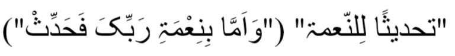
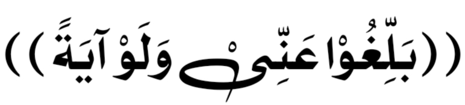
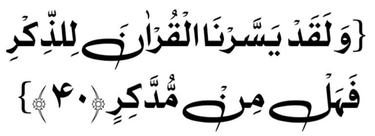

Quran Mein Ho Ghota-Zan Ae Mard-e-Musalman
Allah Kare Tujh Ko Atta Jiddat-e-Kirdar
डॉ० इसरार अहमद
इन सत्रों के नाचीज़ लेखक को कुरान मजीद का टीकाकार तो बहुत दूर की बात है प्रचलित तात्पर्य के आदर से “आलिम-ए-दिन” होने का भी हरगिज़ कोई दावा नहीं है फिर भी ख़ालिसतन

अल्लाह रब्बुल इज़्जत की इन नेमतों के इकरार और इज़हार में कोई रुकावट महसूस नहीं होती कि उसने अपने ख़ास फ़ज़ल-ओ-करम से ऐसे हालात पैदा कर दिए कि शुरुआत उम्र ही में कुरान-ए-हकीम के साथ एक दिली मुहब्बत और जेहनी लगाव क़ायम होती चली गई। इसलिए अव्वल अव्वल बिलकुल ही नौजवानी में (हाईस्कूल के इबतिदाई सालों के दौरान) अल्लामा इक़बाल की शायरी के ज़रीये क़ुरआन की अज़मत मिल्लत-ए-इस्लामी की पुनर्जागरण की उम्मीद और इस के अंतर्गत क़ुरआन की एहमीयत का एक गहरा छवि दिल पर क़ायम फ़र्मा दिया फिर एक ख़ानदानी परंपरा के मुताबिक़ हाईस्कूल की तालीम के दौरान अरबी को एक अतिरिक्त विषय की हैसियत से पसंद करने की सूरत पैदा फ़र्मा दी जिससे अरबी ग्रामर की बुनियादी बातों का ज्ञान हासिल हो गया और फिर मैट्रिक के इमतिहान के बाद राहत के दिनों में (जबकि 1947 के मुस्लिम कश फ़सादाद के नतीजे में हम लग भग एक माह क़स्बा हिसार (जो अब भारत की रियासत हरियाणा में है) में हिंदूओं के हमलों से बचाव के लिए कुछ महलों पर आधारित एक रक्षात्मक बलॉक में घेराबंद थे) क़ुरआन हकीम से पहले सार्थक परिचय की ये सूरत पैदा फ़र्मा दी कि मुझे और मेरे बड़े भाई इज़हार अहमद साहिब मरहूम को एक मस्जिद में बैठ कर मौलाना सय्यद अबुल आला मौदूदी मरहूम की मासिकपत्र “तर्जुमानुल क़ुरआन” में प्रकाशित होने वाली तफ़सीर सूरह यूसुफ़ के सामूहिक अध्ययन और इस पर आपसी चर्चा का मौक़ा मिला जिससे अंदाज़ा हुआ कि क़ुरआन फ़साहत-ओ-बलाग़त की परिपूर्ण और मूलस्रोत हिदायत ही नहीं ज्ञान और विद्या का स्त्रोत भी है और वास्तविक में इस लायक़ है कि बेहतरीन ज़हनी-ओ-फ़िक्री सलाहीयतों को इस के इलम-ओ-फ़हम के परिणाम में इस तौर से उपयोग किया जाये कि सर्वप्रथम उस के सामान्य संदेश को सही तौर पर समझें जो कि ज्ञान और विद्या के इस उग्र समुद्र की सतह पर बिलकुल इसी तरह तैर रहा है जैसे किसी तेल टैंकर से निकला तेल समुद्र की सतह पर तैर रहा है, तेल टैंकर से निकला तेल समुद्र की सतह पर तैर रहा होता है और फिर उस की गहिराईयों में गोताखोरी कर के इस की तह से इस के फ़लसफ़ा-ओ-हिक्मत के असल मोतीयों को तलाश करें!
अलहमदुलिल्लाह, सुम्मा अलहमदुलिल्लाह कि ये उन ही तीन बातों के नतीजे की उपस्तिथि थी कि जब हिंद के बंटवारा के वक़्त एक सौ सत्तर मील का सफ़र (हिसार ता हैड सुलेमांकी) पैदल क़ाफ़िले के साथ आग और ख़ून के दरिया पार कर के पाकिस्तान पहुंचना नसीब हुआ तो फ़ौरन जमात-ए-इस्लामी तहरीक के साथ अमली संबंध हो गई (जो सबसे पहले, जमीयत-ए-इस्लामी में शामिल होने के रूप में था और फिर जमात-ए-इस्लामी में सदस्यता के रूप में !) और इस पूरे दस साला अर्से के दौरान जमीयत और जमात के जलसे में “दरस-ए-क़ुरआन” की ज़िम्मेदारी आम तौर पर मुझ पर रही। जिसे सामान्य रूप में बहुत प्रशंसा की नज़रों से देखा जाता था हालांकि मैं अच्छी तरह समझता था कि सुननेवाले के तरफ से ये तहसीन-ओ-तारीफ़ इक़बाल के इस शेअर के बिल्कुल मुताबिक़ है कि
आगे मैं हरगिज़ इस का दावा भी नहीं करता कि मेरे इस तालिम-ओ-तदब्बुर कुरान के ज़ौक़-ओ-शौक़ में वृद्धिमान बरहोत्री में इस बाहरी पसंद के आधार पर पैदा होने वाली प्रोत्साहन को सिरे से कोई रुकावट नहीं थी लेकिन सच्ची बात ये है कि मैं अपने पाठ के लिए तैयारी के अंतर्गत जो अध्ययन करता और अलग अलग अरबी और उर्दू तफसीरों से संपर्क करता और फिर अपने खुद की ग़ौर-ओ-फ़िक्र से भी काम लेता तो उस के नतीजे में मुझ पर क़ुरआन की अज़मत अधिक प्रकट होता चला गया और इस वचन को हरगिज़ किसी अत्युक्ति पर सही ना समझा जाये कि क़ुरआन ने मुझे अपना असीर कर लिया। इसलिए ये उसी असीरी का पनाहगाह है कि मैंने 1952 ही में (बीस साल की उम्र में) मैडीकल एजूकेशन के बिल्कुल मध्य में ये सचेत फ़ैसला कर लिया था कि अब ये चिकित्सा की शिक्षा भी और चिकित्सक का पेशा भी सब मेरी पसंद में नंबर दो पर रहेंगे पहला पसंद खिदमते कुरान हकीम और खिदमते दीन मतीन को हासिल रहेगी और फिर 1971 में चंद्रमास के अनुसार से चालीस साल की उम्र में जब ये महसूस हुआ कि अल्लाह रब्बुल इज़्जत ने अपने खास फ़ज़ल-ओ-करम से मुझ पर अपनी “عَلَّمَ الْقُرْآنَ” के शान के साथ साथ “عَلَّمَہُ الْبَیَانَ” का भी किसी दर्जे में कृपा फ़र्मा दिया है तो अपने पेशा चिकित्सक को बिलकुल गुडबाय 👋 कह कर अपने आपको पूरे तन और पूरे वक्त से कुरान मुबीन और दीन मतीन की ख़िदमत के लिए वक़्फ़ कर दिया।
मुझ पर अल्लाह रब्बुल इज़्जत का एक ख़ास फ़ज़ल-ओ-करम इस एतिबार से भी हुआ कि उसने मुझे किसी पुराने दस्तूर पे चलने से बचा लिया। इसलिए क़ुरआन के ज्ञान व समझ के अंतर्गत मेरे फायदे का हलक़ा बहुत विस्तृत भी है और कुछ भरोसामंद से विरोधाभास का हामिल(बोझ उठाने वाला) भी! मैंने अपनी एक संकलन “दावत रुजू अलल क़ुरआन का मंज़र-ओ-पस-ए-मंज़र” में इस की पूरी विस्तृत वर्णन दर्ज कर दी है कि मेरे ज्ञान व समझ कुरान के “हौज़” में तफसीरे कुरान के चार सिलसिलों की नहरों से पानी आता रहा जिन पर पांचवां बरहोत्री मेरी तालीम में शामिल चिकित्सा ज्ञान के आधारभूत बातों का इलम था फिर अल्लाह रब्बुल इज़्जत ने मुझे जो तार्किक दिमाग़ अता फ़रमाया था उस के ज़रीये इन पाँच सिलसिलों से प्राप्त किया जानकारियों में “तजमीअ-ओ-तावफुक”(संकलन एवं सदृशता) क़ायम किया। जिसकी बुनियाद पर, बिहमदिल्लाह, मेरे “बयान उल-क़ुरआन” को एक व्यापकता हासिल हो गई। और शायद यही उस की कुबूल होने का असल राज़ है (۱) Read Waqiah
अल्लाह बहुत जानने वाला है एक प्रमाणित “आलिम ए दीन” ना होने के बावजूद जिस चीज़ ने मुझे कुरान को दरस-ओ-तदरीसकी जुर्रत (बल्कि ठेठ मज़हबी संगठन के नज़दीक “दुस्साहस” की हिम्मत अता फ़रमाई वो नबी अकरमﷺ की ये बात है कि

यानी “पहुँचाओ मेरी तरफ से चाहे एक ही आयत!” (सही बुख़ारी और इस के इलावा तिरमिज़ी अहमद और दारमी रहीमहुल्लाह)। इसलिए मेरे नज़दीक जिन दीन के इल्मों को हासिल करने को उलमा किराम जरूरी क़रार देते हैं वो किसी के “मुफ़्ती” बनने के लिए तो आखिरकार लाज़िमी है लेकिन क़ुरआन के दाई(दावत देने वाला) और मुबल्लिग(तबलीग करने वाला) बनने के लिए हरगिज़ ज़रूरी नहीं है। इसलिए कि क़ुरआन का पैग़ाम जबकि कयामत तक पूरी इंसानियत के लिए था फिर भी उस के पहले खिताब किए जाने वाले तो “उम्मी” थे इसलिए क़ुरआन के असल पैग़ाम को अल्लाह रब्बुल इज़्जत ने निहायत “यसीर(सरल)” सूरत में जैसे कि पहले बताया गया एक गहरा समुंद्र की सतह पर तैरने वाले तेल के जैसा पेश किया (यही वजह है कि सुरह अल क़मर में चार बार फ़रमाया गया)

यानी हमने नसीहत-ओ-हिदायत के लिए क़ुरआन को बहुत आसान बना दिया है, तो है कोई जो इस से तज़क्कुर हासिल करे!
मुख्तसर किस्सा: लाहौर में 1965 से मेरे बकायदा हल्का मुताला-ए-क़ुरआन क़ायम हुए तो उस के नतीजे में पहले 1972 में मर्कज़ी अंजुमन ख़ुद्दाम उल-क़ुरआन लाहौर क़ायम हुई, जिसकी कोख से मातहत अंजुमनों का एक सिलसिला बरामद हुआ (कराची, मुल्तान, फैसलाबाद, झंग, कोइटा, इस्लामाबाद, पिशावर, फिर 1976 में लाहौर में क़ुरआन अकैडमी क़ायम हुई और इस की “बेटीयों” के तौर पर कराची, मुल्तान, फैसलाबाद और झंग में भी अकैडमीयां वजूद में आएं)। साथ ही पाकिस्तान के बड़े बड़े शहरों में मेरे दरस-ए-क़ुरआन की महफ़िलें आयोजित होने लगीं। फिर कुरानी प्रशिक्षण केंद्रों (जो एक हफ़्ता से लेकर एक महीने तक के अवधि तक की होती थीं) का सिलसिला शुरू हुआ इधर लाहौर में सालाना क़ुरआन कान्फ़्रैंसों का सिलसिला जारी हुआ और फिर जब पाकिस्तान टेलीविज़न पर ये दर्स क़ुरआन शुरू हुआ तो शुरू शुरू الکتٰب फिर الٓــــمّٓ फिर नबी कामिल (ﷺ) और अंत में الہُدیٰ का साप्ताहिक प्रोग्राम जो पूरे पंद्रह महीने इस शान से जारी रहा कि सप्ताह के एक ही दिन एक ही वक़्त पर पाकिस्तान के तमाम टीवी स्टेशनों से प्रसारण होता था तो इस दौर में जो लोकप्रियता प्राप्त हुई उस की बुनियाद पर मुझे अपने बारे में वो गहरा अंदेशा हो गया था के जिसका ज़िक्र एक हदीस में आया है कि रसूलुल्लाह ﷺ ने इरशाद फ़रमाया “किसी इंसान की बरबादी के लिए ये बात काफ़ी है कि इस के तरफ उंगलियां उठनी शुरू हो जाए!” इस पर दरयाफ़त किया गया कि “अगर ये किसी अच्छाई की बुनियाद पर हो तो क्या तब भी?” तो आप ﷺ ने फ़रमाया “हाँ तब भी इसलिए कि इस से इन्सान के गुमराही में गिरफ्तार होने (यानी इस में हैरत और घमंड जैसी जलाकर में डालने वाली बीमारीयों के पैदा हो जाने) का अंदेशा पैदा हो जाता है मगर ये कि अल्लाह की दया शामिल-ए-हाल(सम्मिलित) हो! (इस हदीस को बयान करने वाला जहनी रज़ी अल्लाह अन्हा ने हज़रत इमरान रज़ी अल्लाह अन्हा से रिवायत किया है हालांकि उस की रिवायत में किसी क़दर कमजोरी मौजूद है)। इसलिए कि इस दौर में वास्तव में हालत ये हो गई थी कि मैं जिधर जाता था लोग एक दूसरे को इशारों के ज़रीये मेरी तरफ़ रुख करते थे, ये भी इस ज़माने की बात है कि मुझसे अधिक लोगों ने तफ़सीर कुरान लिखने की फ़र्माइश की और एक पब्लिशर ने तो बहुत ज़िद किया कि आप एक तर्जुमा-ए-कुरान ही लिख दें लेकिन मैंने हमेशा और सबसे यही कहा कि ये मेरा मुक़ाम नहीं है!
इस दावते क़ुरानी का बुलंदी का भेद यह था कि 1948 ई० (1404 हिजरी) में तरावीह के नमाज के साथ दौरा-ए-तर्जुमा-ए-क़ुरान का आग़ाज़ हुआ। चुनाँचे हर चार रकअत तरावीह से पहले उन रकाअतों में पढ़ी जाने वाली आयात का तर्जुमा और छोटा विनिर्देश बयान होती थी, फिर नमाज़ में उनकी सुनने की चाहत पैदा होती थी, जिसके नतीजे में, कुछ लोगों में कम और कुछ में ज़्यादा, वह गुणवत्ता पैदा हो जाती थी जिसे इक़बाल ने अपने इस शेर में बयान किया है कि:
इस अमल के नतीजे में नमाज़े इशा और नमाज़े तरावीह की पूरा करने में लगभग छ: घंटे सिर्फ़ (खर्च) होते थे। और बहम्दुलिल्लाह सामईन का जोशो ख़रोश और ज़ोक़ो शौक़ दर्शनीय होता था। और सुम्मा अल्हम्दुलिल्लाह कि अब यह सिलसिला पाकिस्तान के बहुत से मक़ामात पर मेरी सल्बी और सार्थक औलाद के ज़रिये जारी है!
इस सिलसिले में दौरा-ए-तर्जुमा-ए-क़ुरान का जो प्रोग्राम 1998 ई० में कराची की क़ुरान अकेडमी की जामा मस्जिद में हुआ, उसकी ऑडियो-वीडियो रिकॉर्डिंग ऊंचे मैयार पर की गयी थी। चुनाँचे यह बहम्दुलिल्लाह ऑडियो-वीडियो कैसिटों और C.Ds और D.V.Ds और टी०वी० चैनल्स के ज़रिये पूरी दुनिया में निहायत बड़े पैमाने पर फ़ैल चुका है। और अब इसे किताबी शक्ल में भी शाया करने का सिलसिला शुरू हो रहा है, जिसकी पहली जिल्द आपकी ख़िदमत में हाज़िर है! इसकी तबाअत-व-अशाअत के सिलसिले में अंजुमन खुद्दामुल क़ुरान सूबा सरहद के सदर जनाब डॉक्टर इक़बाल साफ़ी ने ताकीद (focus) का जो दबाव मरकज़ी अंजुमन पर बरक़रार रखा और माली सहयोग भी पेश किया, उसकी बिना पर इससे फ़ायदा करने वाले हर शख्स पर उनका यह हक़ है कि उनके लिये दुआये खैर ज़रूर करे।
आखरी बात यह कि इस “बयानुल क़ुरान” के ज़िमन में अगर असहाबे इल्म मेरी गलतियों की निशानदेही करें तो मैं आभारी हूँगा। और आइन्दा प्रिंटिंग में तसहीह सुधार भी कर दी जायेगी। इस बात को दोहराने की चंदआँ ज़रूरत नहीं है कि मैं ना मुफ़स्सिर होने का मुद्दई हूँ ना आलिम होने का, बल्कि सिर्फ़ अल्लाह के कलामे पाक और उसके दीने मतीन का अदना ख़ादिम हूँ। और मेरी सब हज़रात से निवेदन है कि मेरे हक़ में दुआ करें कि अल्लाह मेरी कोशिशों को शर्फे क़ुबूल अता फरमाये और निजाते उखरवी का ज़रिया बना दे। आमीन! या रब्बल आलमीन!
(नोट: इस पूरी बहस में मैंने अक़ामते दीन की अमली जद्दो-जहद के लिये तंज़ीमे इस्लामी के क़ियाम का ज़िक्र नहीं किया। इसलिये कि यह एक मुस्तक़िल और जुदागाना बाब है, और इस मुख़्तसर ‘तक़दीम’ में ना उसकी गुंजाइश है ना ज़रूरत। ताहम उसके लिये मेरी तालीफात “तहरीक जमाते इस्लामी: एक तहक़ीक़ी मुताअला” और “सिलसिला-ए-अशाअत तंज़ीमे इस्लामी” अज़ अव्वल ता दहम का मुताअला मुफ़ीद होगा।)
दुआ का तालिब
ख़ाकसार इसरार अहमद
26 नवम्बर, 2008